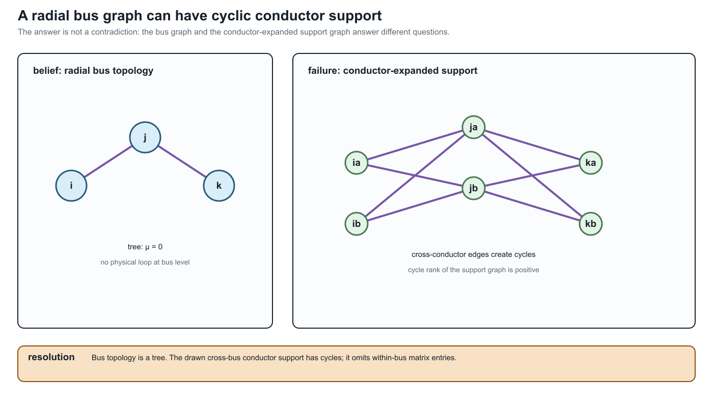

One network, many graphs
Page status: explanatory synthesis introducing the representation landscape.
Calling something the network graph hides the modelling decision that produced it. The same physical power network can yield several non-isomorphic structures, each correct for some questions and inadequate for others.
Treat the network graph as an omitted noun phrase. Ask whether the sentence means an asset graph, active topology, terminal-connectivity graph, bus–branch multigraph, factor incidence graph, or equation/sparsity graph.
A deliberately difficult network
The running network for this book contains ordered conductor terminals, an explicit neutral and grounding impedance, heterogeneous parallel lines, switchgear, and a genuinely multiwinding transformer. It also contains limits and controls used in a decision problem. Its complete semantic specification is given in The running multiconductor network. Its first numerical realization and the six illustrated views described below are given in the Executable running network.
The representation-scoped meanings of cycles, parallelism, bridges, leaves, and radial ends are developed in Cycles, parallelism, and radial structure.
The first surprise is not a new device; it is a change of graph. At the bus level the feeder can be radial, while dense multiconductor stamps create cliques—and therefore cycles—in the scalar support graph used by a matrix algorithm:

The resolving phrase is which graph? Bus-level radiality is a statement about equipment connectivity. Support-graph cycles are a statement about algebraic coupling. The latter can still be chordal and admit useful leaf-clique elimination; it is not evidence of an additional physical loop.
Nothing exotic is required to create representational disagreement. Parallel lines already show the issue. If two branches $\ell_1$ and $\ell_2$ connect buses $i$ and $j$, a multigraph retains both triples
\[\ell_1ij,\ \ell_2ij\in\mathcal T^{L\rightarrow}.\]
Here $i$ and $j$ are bus labels, not necessarily row and column numbers in an array. If a software implementation enumerates the bus set, its stored entry is written $[\mathbf Y]_{\kappa(i),\kappa(j)}$; the semantic relation remains $\mathbf Y_{ij}$. This is the same label-before-coordinate rule used in the equation-reading bridge.
A simple graph retains only the adjacency $i\sim j$. A weighted simple graph might store
\[\mathbf Y_{ij}^{\mathrm{eq}} =\mathbf Y_{\ell_1}+\mathbf Y_{\ell_2},\]
but this does not by itself retain individual current limits, outages, maintenance states, ownership, or investment choices.
Six useful views
Asset view
The asset graph distinguishes each line, winding, switch, grounding device, measurement, and owner. It supports questions such as which circuit is unavailable? and which construction record produced this impedance? It need not contain the virtual buses introduced by an OPF formulation.
Terminal-connectivity view
This view records ordered bus terminals and the maps by which element conductors attach to them. It can distinguish phase $a$ from a neutral and can represent a conductor permutation between the ends of a line. It is the natural place to resolve switchgear and grounding connectivity.
Bus–branch multigraph
Buses are vertices and identified two-terminal elements are edges. Parallel circuits remain distinct. This view is effective when the device vocabulary is genuinely two-terminal or when multi-terminal devices have been compiled into an equivalent network with explicit provenance.
Port–factor view
Ports carry terminal variables and factors impose constitutive, limit, control, or measurement relations. A multiwinding transformer can remain one factor with one port bundle per winding. The number of ports is not forced to two.
Equation or optimization view
Variables and constraints form a bipartite graph, or blocks form a computational dependency graph. This view exposes separability, coupling, and decomposition opportunities. An auxiliary variable created for numerical convenience becomes a graph vertex even though it is not a physical object.
Matrix sparsity view
The nonzero pattern of an admittance, Jacobian, KKT, or Schur-complement matrix defines another graph. Elimination may reduce the number of variables while making this graph denser. A sparsity edge means algebraic coupling, not necessarily a physical branch.
Loads, generators, and the graph boundary
Loads and generators expose why an element inventory must be declared before the word graph is used. In an asset or bus–branch graph they are usually devices attached to a bus, not ordinary line edges. In a port–factor graph they are explicit one-terminal or multi-terminal factors. In a nodal-support graph they appear only when a declared formulation stamps a linear or linearized part of their relation into the nodal operator. In an equation or optimization graph they also appear through injections, controls, limits, and decision variables.
The same device can therefore be absent from one graph and present in another without contradiction:
| View | Device role | Typical question |
|---|---|---|
| asset or bus–branch graph | attached equipment or a bus-side factor; not necessarily an edge | which device is switchable, owned, or removed? |
| port–factor graph | one-terminal or multi-terminal constitutive factor with a terminal map | what relation, limit, or control does the device impose? |
| nodal-support graph | a diagonal shunt, off-diagonal block, or no direct stamp, depending on the declared model | which retained voltage coordinates are coupled by this formulation? |
| solver/Jacobian graph | injection, residual, derivative, control, or constraint block | which variables and equations determine the next iterate or decision? |
A constant-admittance load can therefore be stamped into a diagonal nodal block without becoming a physical network edge. A Norton generator or a multi-terminal device can contribute a different block pattern. The stamping choice is a property of the declared study formulation, not a definition of the source asset graph. The circuit formulation boundary and load-model chapter make this split explicit.
Different questions select different views
| Question | Required retained meaning | A useful view |
|---|---|---|
| Are two assets independently switchable? | member identity and switch state | asset graph or multigraph |
| Which conductors share a junction? | ordered terminals and terminal maps | terminal-connectivity model |
| What is the boundary current response? | constitutive relation at retained ports | port–factor or admittance model |
| Which constraints determine the OPF optimum? | feasible set, controls, objective | optimization model |
| Which variables should be eliminated first? | numerical nonzero structure | sparsity graph |
| Can a result be mapped to the source data? | provenance and recovery | linked source and generated views |
The views are not arranged in a universal hierarchy. The asset graph may know more about ownership and less about electrical variables than a compiled optimization graph. Expressiveness is relative to the declared question.
The first preservation test
Suppose each parallel line obeys
\[\mathbf I^{\mathrm s}_{\ell ij} =\mathbf Y_\ell \bigl(\mathbf U_i[\mathbf N_{\ell i}] -\mathbf U_j[\mathbf N_{\ell j}]\bigr)\]
and has a conductor-current feasible set $\mathcal C_\ell$. Aggregating admittance preserves the sum of terminal series currents, but the source feasible voltage differences satisfy
\[\left\{\Delta\mathbf U:\ \mathbf Y_\ell\Delta\mathbf U\in\mathcal C_\ell \quad\forall\ell\right\}.\]
A single conventional edge limit need not reproduce this intersection. The transformation can be exact for one observation and wrong for a decision problem. This is why the book asks for a Preservation contracts rather than calling a smaller graph simply equivalent. A first failure: heterogeneous parallel branches gives an analytic witness and executable certificate.
The route through the book
Before the formal taxonomy, One network, five languages translates the recurring terms used by power engineers, software and data experts, mathematical modellers, graph theorists, and graph-machine-learning readers. The Representation taxonomy separates the major model families. Notation and modelling conventions fixes the element, arc, terminal, and winding indices. Representation implementation record records the linked architecture's executable implementation status. The transformation parts then ask which views can be derived, under what guards, and with what consequences for feasible decisions. Five buses through a multi-port lowering is the compact bridge from these view names to an explicit three-winding compilation and loss ledger.